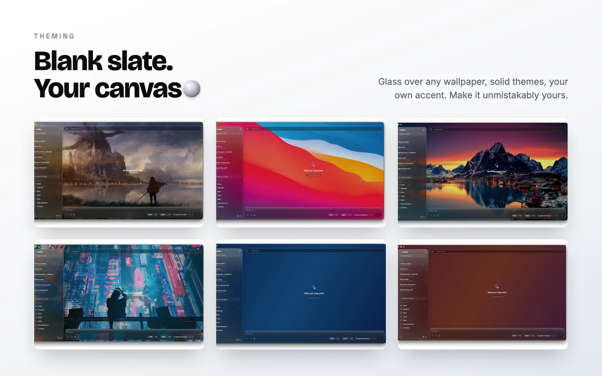

Models & data boundaries
A sovereign AI assistant on Mac and iPhone: what stays local, and what does not
An honest map of JoeBro’s local Mac workspace, model-provider boundary, iPhone pairing requirements, and the limits of its documented setup.